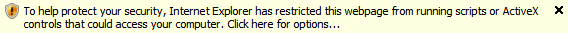

SketchUp Web Exporter Beta
SketchUp Web Exporter Beta| Q: What does this create? |
|
The SketchUp Web Exporter creates a directory containing a number of images, an HTML file and a ZIP containing the HTML and the images.
|
| Q: How do I add my web export to a web page? |
|
First, upload the HTML and image files to a web server (e.g., pages.google.com). Remember the URL of the HTML file.
Then edit your webpage with this line
|
| Q: Why does this page ask about running ActiveX (Internet Explorer only)? |
|
If you see this warning:
 it is simply because the SketchUp Web Exporter uses JavaScript to drive its interaction. Internet Explorer will warn you when you first load a web page that uses JavaScript if that page is accessed directly off of your file system. This warning will not appear once you post the HTML file to a web server. If is safe to allow this page to run JavaScript.
Other browsers like FireFox will not
issue this warning.
|
| Additional Resources |
| Help Video |
| Discussion |
| Learn about embedding IFRAMEs |